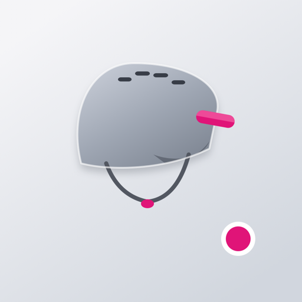

Control del móvil para padres
LIMOX es una app para iPhone con la que un padre o una madre limita las apps. Se elige qué apps se pueden usar, un tiempo al día, o las dos cosas. La protección sigue aunque se apague el iPhone, hasta quitarla con una clave de 4 números.
No supervisa el teléfono y no lee mensajes ni fotos. Usa el control de pantalla de Apple. Teléfono, FaceTime, Mensajes, Mapas y Ajustes siguen disponibles. La guía de la app enseña a poner otra clave en Tiempo de uso.
Se bloquea todo menos las apps que el padre mete en la caja.
Las apps se pueden usar hasta el tiempo del día. A medianoche el tiempo vuelve a empezar. El modo no se quita solo.
Solo la caja, y además con un tiempo al día.
Hace falta para quitar la protección. Se guarda en el llavero de ese iPhone y no sale de ahí. Si se olvida, no se puede recuperar.
Si el Apple ID es el del niño, dentro de En Familia, Apple pide la contraseña del padre. Después, borrar LIMOX también pide esa contraseña. LIMOX no la recibe ni la guarda.
LIMOX es una app independiente. No está afiliada, respaldada ni conectada con Apple, salvo que usa el control de pantalla que iOS ofrece a las apps.